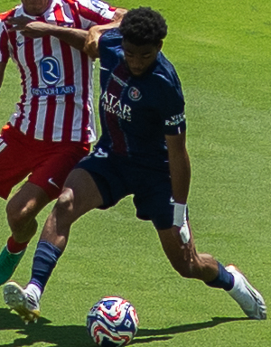
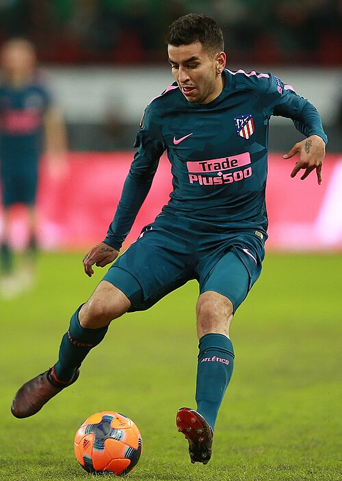

Transfer Movement Board
A market movement tape for loans, free agents, academy movement, contract signals, ARES impact, and Market impact.
Highest SignalBuy Watch
Biggest RiserTrend
Contract WatchWindow
Best FitClub
Transfer Signal Table
Market movement tape for transfers, loans, free agents, academy movement, and contracts.
| Date | Image | Player | Age | Position | From | To | Country | Continent | Type | ARES Impact | Market Impact | Confidence |
|---|---|---|---|---|---|---|---|---|---|---|---|---|
| 2026-05-02 | Benjamin Šeško | 22 | FW | Manchester United F.C. | Market fit review | England | Europe | Loan Watch | +1.5 | +4.6 | High | |
| 2026-05-03 |  | Ibrahim Mbaye | 18 | FW | Paris Saint-Germain FC | Market fit review | France | Europe | Permanent Signal | +1.3 | +3.8 | High |
| 2026-05-04 | Fermín López | 23 | MF | Futbol Club Barcelona | Market fit review | Spain | Europe | Free Agent Watch | +1.5 | +4.5 | High | |
| 2026-05-05 | Alan Matturro | 21 | DF | Levante UD | Market fit review | Spain | Europe | Academy Promotion | +1.4 | +4.1 | High | |
| 2026-05-06 |  | Ben Doak | 20 | FW | AFC Bournemouth | Market fit review | England | Europe | Contract Signal | +1.2 | +3.6 | High |
| 2026-05-07 |  | Mateo Retegui | 27 | FW | Al Qadsiah FC | Market fit review | Saudi Arabia | Asia | Loan Watch | +0.9 | +2.6 | High |
| 2026-05-08 |  | Enzo Millot | 23 | MF | Al Ahli FC | Market fit review | Saudi Arabia | Asia | Permanent Signal | +0.8 | +2.4 | High |
| 2026-05-09 |  | Neta Lavi | 29 | MF | Gamba Osaka | Market fit review | Japan | Asia | Free Agent Watch | +1.5 | +4.6 | High |
| 2026-05-10 |  | Julian Weigl | 30 | MF | Al Qadsiah FC | Market fit review | Saudi Arabia | Asia | Academy Promotion | +1.5 | +4.4 | High |
| 2026-05-11 |  | Marko Dugandžić | 32 | FW | FC Seoul | Market fit review | South Korea | Asia | Contract Signal | +1.2 | +3.6 | High |
| 2026-05-12 | NOWNorth Africa | NOWNorth AfricaNuru Okeke | 27 | W | Wydad AC | Market fit review | Morocco | Africa | Loan Watch | +1.3 | +3.8 | Medium |
| 2026-05-13 | KMFWNorth Africa | KMFWNorth AfricaKofi Mensar | 18 | FW | Al Ahly SC | Market fit review | Egypt | Africa | Permanent Signal | +0.3 | +0.8 | Medium |
| 2026-05-14 | TMDFSouthern Africa | TMDFSouthern AfricaTebo Mkhize | 24 | DF | Mamelodi Sundowns F.C. | Market fit review | South Africa | Africa | Free Agent Watch | +0.9 | +2.8 | Medium |
| 2026-05-15 | ABMFNorth Africa | ABMFNorth AfricaAmir Benyoussef | 21 | MF | Zamalek SC | Market fit review | Egypt | Africa | Academy Promotion | +0.6 | +1.8 | Medium |
| 2026-05-16 | IEFGKNorth Africa | IEFGKNorth AfricaIdris El Fassi | 30 | GK | Raja CA | Market fit review | Morocco | Africa | Contract Signal | +1.6 | +4.8 | Medium |
| 2026-05-17 | Omar Govea | 30 | MF | C.D. Guadalajara | Market fit review | Mexico | North America | Loan Watch | +1.3 | +3.8 | High | |
| 2026-05-18 |  | Louis Munteanu | 23 | FW | D.C. United | Market fit review | USA / Canada | North America | Permanent Signal | +0.2 | +0.5 | High |
| 2026-05-19 |  | Felipe Mora | 32 | FW | Pumas UNAM | Market fit review | Mexico | North America | Free Agent Watch | +0.5 | +1.4 | High |
| 2026-05-20 |  | Ángel Correa | 31 | MF | Tigres UANL | Market fit review | Mexico | North America | Academy Promotion | +0.7 | +2.1 | High |
| 2026-05-21 |  | Son Heung-min | 33 | FW | Los Angeles FC | Market fit review | USA / Canada | North America | Contract Signal | +0.5 | +1.6 | High |
| 2026-05-22 | Thomás Ortega | 25 | DF | Independiente Rivadavia | Market fit review | Argentina | South America | Loan Watch | +0.8 | +2.3 | High | |
| 2026-05-23 | Olávio Vieira dos Santos Júnior | 29 | FW | Clube de Regatas do Flamengo | Market fit review | Brazil | South America | Permanent Signal | +1.2 | +3.5 | High | |
| 2026-05-01 | Jarlan Barrera | 26 | MF | S.C. Corinthians Paulista | Market fit review | Brazil | South America | Free Agent Watch | +0.3 | +0.9 | High | |
| 2026-05-02 |  | Vitor Roque | 21 | FW | Sociedade Esportiva Palmeiras | Market fit review | Brazil | South America | Academy Promotion | -0.3 | -0.9 | High |
| 2026-05-03 | Reinier | 24 | MF | Clube Atlético Mineiro | Market fit review | Brazil | South America | Contract Signal | +0.4 | +1.2 | High | |
| 2026-05-04 |  | Juan Mata | 38 | FW | Melbourne Victory FC | Market fit review | Australia / New Zealand | Oceania | Loan Watch | +1.1 | +3.3 | High |
| 2026-05-05 | AVWOceania | AVWOceaniaAri Vatu | 30 | W | Sydney FC | Market fit review | Australia | Oceania | Permanent Signal | +1.6 | +4.8 | Medium |
| 2026-05-06 | NKFWOceania | NKFWOceaniaNoah Kerrin | 21 | FW | Melbourne Victory FC | Market fit review | Australia | Oceania | Free Agent Watch | +0.6 | +1.8 | Medium |
| 2026-05-07 | MWGKOceania | MWGKOceaniaMason Wylie | 27 | GK | Auckland FC | Market fit review | New Zealand | Oceania | Academy Promotion | +1.3 | +3.8 | Medium |
| 2026-05-08 | LTDFOceania | LTDFOceaniaLuka Tevita | 24 | DF | Wellington Phoenix FC | Market fit review | New Zealand | Oceania | Contract Signal | +0.9 | +2.8 | Medium |
Transfer Signal Distribution
Buy, hold, watch, risk, and confidence mix.
X-axis: CategoryY-axis: Score / Count
ARESMarketTrendConfidence
How to read: Bars summarize the strongest market and performance signals on this page.